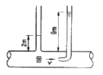
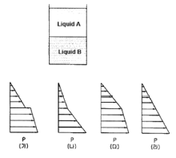
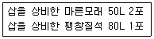

소방설비기사(기계분야) (2010-09-05 기출문제)
1과목: 소방원론
1. 목조건축물에서 화재가 최성기에 이르면 천장, 대들보 등이 무너지고 강한 복사열을 발생한다. 이 때 나타날 수 있는 최고 온도는 약 몇 ℃인가?
- 300
- 600
- 900
- 1300
(정답률: 76%)

2. 분자식이 CF2BrCl인 할로겐화합물 소화약제는?
- Halon 1301
- Halon 1211
- Halon 2402
- Halon 2021
(정답률: 78%)
3. 건축물의 화재발생시 인간의 피난 특성으로 틀린 것은?
- 평상시 사용하는 출입구나 통로를 사용하는 경향이 있다.
- 화재의 공포감으로 인하여 빛을 피해 어둔 곳으로 몸을 숨기는 경향이 있다.
- 화염, 연기에 대한 공포감으로 발화지점의 반대방향으로 이동하는 경향이 있다.
- 화재시 최초로 행동을 개시한 사람을 따라 전체가 움직이는 경향이 있다.
(정답률: 80%)
4. 피난계획의 일반적 원칙이 아닌 것은?
- 피난경로는 간단명료할 것
- 2방향의 피난동선을 확보하여 둘 것
- 피난수단은 이동식 시설을 원칙으로 할 것
- 인간의 특성을 고려하여 피난 계획을 세울 것
(정답률: 80%)
5. 건축물의 피난ㆍ방화구조 등의 기준에 관한 규칙에서 건축물의 바깥쪽에 설치하는 피난계단의 유효너비는 몇m 이상으로 하여야 하는가?
- 0.6
- 0.7
- 0.9
- 1.2
(정답률: 65%)
6. 수소의 공기 중 폭발범위에 가장 가까운 것은?
- 12.5~54vol%
- 4~75vol%
- 5~15vol%
- 1.⑤~6.7vol%
(정답률: 80%)
7. 건축물에 화재가 발생하여 일정 시간이 경과하게 되면 일정 공간 안에 열과 가연성가스가 축적되고 한순간에 폭발적으로 화재가 확산되는 현상을 무엇이라고 하는가?
- 보일오버현상
- 플래쉬오버현상
- 패닉현상
- 리프팅현상
(정답률: 80%)
8. 실내온도 15℃에서 화재가 발생하여 900℃가 되었다면 기체의 부피는 약 몇 배로 팽창되었는가? (단, 압력은 1기압으로 일정하다.)
- 2.23
- 4.07
- 6.45
- 8.⑤
(정답률: 69%)
9. 탄산가스에 대한 일반적인 설명으로 옳은 것은?
- 산소와 반응시 흡열반응을 일으킨다.
- 산소와 반응하여 불연성 물질을 발생시킨다.
- 산화하지 않으나 산소와는 반응한다.
- 산소와 반응하지 않는다.
(정답률: 57%)
10. 다음 중 표면연소에 대한 설명으로 올바른 것은?
- 목재가 산소와 결합하여 일어나는 불꽃연소 현상
- 종이가 정상적으로 화염을 내면서 연소하는 현상
- 오일이 기화하여 일어나는 연소 현상
- 코크스나 숯의 표면에서 산소와 접촉하여 일어나는 연소현상
(정답률: 70%)
11. 다음 중 제 4류 위험물에 적응성이 있는 것은?
- 옥내소화전설비
- 옥외소화전설비
- 봉상수소화기
- 물분무소화기
(정답률: 64%)
12. 표준상태에 있는 메탄가스의 밀도는 몇 g/L인가?
- 0.21
- 0.41
- 0.71
- 0.91
(정답률: 61%)
13. 물의 기화열을 이용하여 열을 흡수하는 방식으로 소화하는 방법은?
- 냉각소화
- 질식소화
- 제거소화
- 촉매소화
(정답률: 78%)
14. 재료와 그 특성의 연결이 옳은 것은?
- PVC 수지 - 열가소성
- 페놀 수지 - 열가소성
- 폴리에틸렌 수지 - 열경화성
- 멜라민 수지 - 열가소성
(정답률: 57%)
15. 포소화설비의 국가화재안전기준에서 정한 포의 종류 중 저발포라 함은?
- 팽창비가 20 이하인 것
- 팽창비가 120 이하인 것
- 팽창비가 250 이하인 것
- 팽창비가 21000 이하인 것
(정답률: 76%)
16. 위험물의 유별 성질이 가연성 고체인 위험물은 제 몇 류 위험물인가?
- 제1류 위험물
- 제2류 위험물
- 제3류 위험물
- 제4류 위험물
(정답률: 74%)
17. 니트로셀룰로오스에 대한 설명으로 잘못된 것은?
- 질화도가 낮을수록 위험성이 크다.
- 물을 첨가하여 습윤시켜 운반한다.
- 화약의 원료로 쓰인다.
- 고체이다.
(정답률: 72%)
18. 제1종 분말소화약제인 탄산수소나트륨은 어떤 색으로 착색되어 있는가?
- 백색
- 담회색
- 담홍색
- 회색
(정답률: 74%)
19. 탄화칼슘이 물과 반응할 때 발생되는 기체는?
- 일산화탄소
- 아세틸렌
- 황화수소
- 수소
(정답률: 67%)
20. 물의 기화열이 539cal인 것은 어떤 의미인가?
- 0℃의 물 1g이 얼음으로 변화하는데 539cal의 열량이 필요하다.
- 0℃의 얼음 1g이 물로 변화하는데 539cal의 열량이 필요하다.
- 0℃의 물 1g이 100℃의 물로 변화하는데 539cal의 열량이 필요하다.
- 100℃의 물 1g이 수증기로 변화하는데 539cal의 열량이 필요하다.
(정답률: 75%)
2과목: 소방유체역학
21. 용량 2000L의 탱크에 물을 가득 채운 소방차가 화재현장에 출동하여 노즐압력 390kPa(계기압력), 노즐 구경 2.5cm를 사용하여 방수한다면 소방차 내에 물이 전부 방수되는데 걸리는 시간은?
- 약 2분 30초
- 약 3분 30초
- 약 4분 30초
- 약 5분 30초
(정답률: 50%)
22. 커다란 탱크 의 밑면에서 물이 0.⑤m3/s로 일정하게 흘러나가고, 위에서는 단면적 0.025m2, 분출속도가 8m/s의 노즐을 통하여 탱크로 유입되고 있다. 탱크 내 물은 몇 m3/s으로 늘어나는가?
- 0.15
- 0.0145
- 0.3
- 0.03
(정답률: 56%)
23. 두 물체를 접촉시켰더니 잠시 후 두 물체가 열평형 상태에 도달하였다. 이 열평형 상태는 무엇을 의미하는가?
- 두 물체의 온도가 서로 같으며 더 이상 변화하지 않는 상태
- 한 물체에서 일은 열량이 다른 물체에서 얻은 열량과 같은 상태
- 두 물체의 비열은 다르나 열용량이 서로 같아진 상태
- 두 물체의 열용량은 다르나 비열이 서로 같아진 상태
(정답률: 59%)
24. 다음 중 점성계수 μ의 차원은 어느 것인가? (단, M:질량 L:길이 T:시간의 차원이다.)
- [ML-1T-2]
- [ML-2T-1]
- [M-1L-1T]
- [ML-1T-1]
(정답률: 42%)
25. 유동 단면이 30cm×40cm인 사각 덕트를 통하여 비중 0.86, 점성계수가 0.027kg/mㆍs인 기름이 2m/s의 유속으로 흐른다. 이 때 수력직경에 기초한 레이놀즈수는?
- 18670
- 21850
- 32150
- 33290
(정답률: 44%)
26. 비중이 0.8인 물질이 흐르는 배관에 수은 마노미터를 설치하여 한쪽 끝은 대기에 노출시켰다. 내부 게이지 압력이 58.8kPa이라면 수은주의 높이 차이는 약 몇 cm인가?
- 0.441
- 0.469
- 44.1
- 46.9
(정답률: 15%)
27. 두 개의 견고한 밀폐용기 A, B가 밸브로 연결되어 있다. 용기 A에는 온도 300K,압력100kpa의 공기1m3,용기B에는 온도300K, 압력 330kPa의 공기 2m3가 들어 있다. 밸브를 열어 두 용기 안에 들어있는 공기(이상기체)를 혼합한 후 장시간 방치하였다. 이 때 주위온도는 300K로 일정하다. 내부 공기의 최종 압력은 약 몇 kPa 인가?
- 177
- 210
- 215
- 253
(정답률: 31%)
28. 열전달 면적이 A이고 온도 차이가 10℃, 벽의 열전도율이 10W/(mㆍK), 두께 25cm인 벽을 통한 열전달률이 100W이다. 동일한 열전달 면적인 상태에서 온도차이가 2배, 벽의 열전도율이 4배가 되고 벽의 두께가 2배가 되는 경우 열전달률은 몇 W인가?
- 50
- 200
- 400
- 800
(정답률: 48%)
29. 압력 P1 = 100kPa, 온도 T1 = 300K, 체적 V1 = 1.0m3인 밀폐계(closed system)의 이상기체가 PV1.3 = 일정인 폴리트로픽 과정(polytropic process)을 거쳐 압력 P2 = 300kPa까지 압축된다면 최종상태의 온도 T2는 대략 얼마인가?
- 350K
- 390K
- 430K
- 470K
(정답률: 44%)
30. 일반적인 베르누이 방정식을 적용할 수 있는 조건으로 구성된 것은?
- 비압축성 흐름, 점성 흐름, 정상 유동
- 압축성 흐름, 비점성 흐름, 정상 유동
- 비압축성 흐름, 비점성 흐름, 비정상 유동
- 비압축성 흐름, 비점성 흐름, 정상 유동
(정답률: 70%)
31. 관내에 물이 흐르고 있을 때, 그림과 같이 액주계를 설치하였다. 관내에서 물의 평균유속은 약 몇 m/s인가?

- 2.6
- 7
- 11.7
- 137.2
(정답률: 56%)
32. 유체의 압축률에 대한 기술로서 틀린 것은?
- 체적탄성계수의 역수에 해당한다.
- 유체의 압축률이 작을수록 압축하기 힘들다.
- 압축률은 단위압력변화에 대한 체적의 변형률을 말한다.
- 체적의 감소는 밀도의 감소와 같은 뜻을 갖는다.
(정답률: 56%)
33. 아래 그림과 같이 단위 중량이 각각 rA, rB (rA>rB) 인 두 개의 섞이지 않는 액체가 용기에 담겨져 있다. 액체의 계기압력의 연직 분포를 정확하게 묘사하고 있는 그림은?

- (가)
- (나)
- (다)
- (라)
(정답률: 49%)
34. 물 속 같은 깊이에 수평으로 잠겨있는 원형 평판의 지름과 정사각형 평판의 한 변의 길이가 같을 때 두 평판의 한쪽면이 받는 정수력학적 힘의 비는?
- 1:1
- 1:1.13
- 1:1.27
- 1:1.62
(정답률: 50%)
35. 수평원형관 내에 밀도 p=860kg/m3인 유체가 평균유속 0.6m/s로 정상상태 하에서 흐르고 있다. 관마찰계수가 0.04라면 이 관벽에서의 전단응력은 약 몇 Pa인가?
- 0.16
- 0.55
- 1.55
- 15.17
(정답률: 24%)
36. 펌프 운전 중에 펌프 입구와 출구에 설치된 진공계, 압력계의 지침이 흔들리고 동시에 토출유량이 변화하는 현상으로 송출압력과 송출유량 사이에 주기적인 변동이 일어나는 이와 같은 현상은?
- 수격 현상
- 서징 현상
- 공동 현상
- 와류 현상
(정답률: 63%)
37. 물을 0.025m3/s의 유량으로 퍼 올리고 있는 펌프가 있다. 흡입측 계기압력은 -3kPa이고 이 보다 100m 위에 위치한 곳의 계기압력은 100kPa이었다. 배관에서 발생하는 마찰 손실이 14m라 할 때 펌프가 물에 가해야 할 동력은 약 몇 kW인가? (단, 흡입, 송출측 관지름은 모두 100m이고 물의 밀도는 p=1000kg/m3이다.)
- 10.3
- 16.7
- 21.8
- 30.5
(정답률: 31%)
38. 시간 △t 사이에 물체의 선운동량이 △P 만큼 변했을 때 △P/△t는 무엇을 뜻하는가?
- 운동량의 변화
- 충격량의 변화
- 가속도
- 힘
(정답률: 43%)
39. 국소대기압의 98.6kPa인 곳에서 펌프에 의하여 흡입되는 물의 압력을 진공계로 측정하였다. 진공계가 7.3kPa을 가리켰을 때 절대 압력은 몇 kPa인가?
- 0.93
- 9.3
- 91.3
- 1⑤.9
(정답률: 59%)
40. 관내의 흐름에서 부차적 손실에 해당되지 않는 것은?
- 관 단면의 급격한 확대에 의한 손실
- 유동단명의 장애물에 의한 손실
- 직선 원관 내의 손실
- 곡선부에 의한 손실
(정답률: 62%)
3과목: 소방관계법규
41. 소방시설공사업에서 “소방시설업”에 포함되지 않는 것은?
- 소방시설설계업
- 소방시설공사업
- 소방공사감리업
- 소방시설점검업
(정답률: 62%)
42. 중앙소방기술심의위원회 위원의 자격으로 잘못된 것은?
- 소방시설관리사
- 석사 이상의 소방관련 학위 소지자
- 소방관련단체에서 소방관련업무에 5년 이상 종사한 자
- 대학교ㆍ연구소에서 소방과 관련된 교육 또는 연구에 3년이상 종사한 자
(정답률: 38%)
43. 다음 중 연 1회 이상 소방시설관리업자 또는 방화관리자로 선임된 소방시설관리사, 소방기술사가 종합정밀점검을 의무적으로 실시하여야 하는 것은?
- 옥내소화전 설비가 설치된 연면적 1천제곱미터 이상인 특정소방대상물
- 스프링클러설비가 설치된 연면적 3천제곱미터 이상인 특정소방대상물
- 물분무 등 소화설비가 설치된 연면적 5천제곱미터 이상인 특정소방대상물
- 11층 이상의 아파트
(정답률: 50%)
44. 위험물을 저장 또는 취급하는 탱크의 용적의 산정기준에서 탱크의 용량은?
- 당해 탱크의 내용적에 공간용적을 더한 용적
- 당해 탱크의 내용적에서 공간용적을 뺀 용적
- 당해 탱크의 내용적에 공간용적을 곱한 용적
- 당해 탱크의 내용적을 공간용적으로 나눈 용적
(정답률: 62%)
45. 국제구조대를 편성ㆍ운영함에 있어 국제구조대의 편성에 속하지 않는 것은?
- 운영반
- 탐색반
- 안전평가반
- 항공반
(정답률: 26%)
46. 소방시설 중 “화재를 진압하거나 인명구조활동을 위하여 사용하는 설비”로 구분되는 것은?
- 피난설비
- 소화설비
- 소화용수설비
- 소화활동설비
(정답률: 70%)
47. 하자보수대상 소방시설과 하자보수보증기간을 나타낸 것으로 잘못된 것은?
- 피난기구 - 2년
- 비상경보설비 - 2년
- 무선통신보조설비 - 3년
- 자동식소화기 - 3년
(정답률: 57%)
48. 소방시설설치유지 및 안전관리에 관한 법령상 소방검사자의 자격으로 알맞은 것은?
- 소방기술사 자격을 취득한 자
- 소방시설관리사 자격을 취득한 자
- 소방시설기사 자격을 취득한 자
- 소방공무원으로서 위험물기능사 자격을 취득한 자
(정답률: 34%)
49. 소방자동차의 출동을 방해한 자에 대한 벌칙은?(오류 신고가 접수된 문제입니다. 반드시 정답과 해설을 확인하시기 바랍니다.)
- 1년 이하의 징역 또는 1천만원 이하의 벌금
- 3년 이하의 징역 또는 2천만원 이하의 벌금
- 5년 이하의 징역 또는 3천만원 이하의 벌금
- 10년 이하의 징역 또는 5천만원 이하의 벌금
(정답률: 63%)
50. 소방시설 등에 대한 자체점검을 실시하지 아니하거나 관리업자 등으로 하여금 정기적으로 점검하게 하지 아니한 자의 벌칙은?
- 3년 이하의 징역 또는 1천500만원 이하의 벌금
- 300만원 이하의 벌금
- 1년 이하의 징역 또는 1천만원 이하의 벌금
- 6개월 이상의 징역 또는 1천만원 이하의 벌금
(정답률: 54%)
51. 옥외탱크저장소의 액체위험물탱크 중 그 용량이 얼마 이상인 탱크는 기초ㆍ지반검사를 받아야 하는가?
- 10만리터 이상
- 30만리터 이상
- 50만리터 이상
- 100만리터 이상
(정답률: 50%)
52. 위험물안전관리법상 과징금 처분에서 위험물 제조소 등에 대한 사용의 정지가 공익을 해칠 우려가 있을 때, 사용정지처분에 갈음하여 얼마의 과징금을 부과할 수 있는가?
- 5천만원 이하
- 1억원 이하
- 2억원 이하
- 3억원 이하
(정답률: 33%)
53. 방염성능기준 이상의 실내장식물 등을 설치하여야 하는 특정소방대상물에 속하지 않는 것은?
- 숙박시설
- 노유자시설
- 운동시설로서 수영장
- 종합병원
(정답률: 66%)
54. 위험물안전관리법령에서 정한 게시판의 주의 사항으로 잘못된 것은?
- 제2류 위험물(인화성고체 제외) : 화기주의
- 제3류 위험물 중 자연발화성물질 : 화기엄금
- 제4류 위험물 : 화기주의
- 제5류 위험물 : 화기엄금
(정답률: 58%)
55. 소방시설치유지 및 안전관리에 관한 법령상 소방검사자의 자격으로 알맞은 것은?(문제 오류로 48번 문제와 같습니다. 정확한 문제 내용과 보기 내용을 아시는분 께서는 오류신고를 통하여 내용 작성 부탁 드립니다. 제가 가진 원본도 그러네요.)
- 소방기술사 자격을 취득한 자
- 소방시설관리사 자격을 취득한 자
- 소방시설기사 자격을 취득한 자
- 소방공무원으로서 위험물기능사 자격을 취득한 자
(정답률: 35%)
56. 화재를 예방ㆍ경계하거나 진압하고 화재, 재난ㆍ재해 그 밖의 위급한 상황에서의 구조ㆍ구급활동 등을 통하여 국민의 생명ㆍ신체 및 재산을 보호함으로써 공공의 안녕질서 유지와 복리증진에 이바지함을 목적으로 하는것은?
- 소방시설설치유지 및 안전관리에 관한 법률
- 다중이용업소의 안전관리에 관한 특별법
- 소방시설공사업법
- 소방기본법
(정답률: 62%)
57. 제1류 위험물로서 성질상 산화성고체에 해당되지 않는 것은?
- 아염소산염류
- 무기과산화물
- 중크롬산염류
- 과염소산
(정답률: 55%)
58. 화재경계지구의 지정 등에 관한 설명으로 잘못된 것은?
- 화재경계지구는 소방본부장 또는 소방서장이 지정한다.
- 화재가 발생우려가 높거나 화재가 발생하는 경우 그로 인하여 피해가 클 것으로 예상되는 지역을 지정할 수 있다.
- 소방본부장은 화재의 예방과 경계를 위하여 필요하다고 인정할 때에는 관계인에 대하여 소방용수시성 또는 소화기구의 설치를 명할 수 있다.
- 소방서장은 화재경계지구안의 관계인에 대하여 소방상 필요한 훈련 및 교육을 실시할 수 있다.
(정답률: 58%)
59. 특정소방대상물에 소방시설이 화재안전기준에 따라 설치되지 아니한 때 특정소방대상물의 관계인에게 필요한 조치를 명할 수 있는 명령권자는?
- 관할구역 구청장
- 시ㆍ도지사
- 소방본부장 또는 소방서장
- 방화관리자를 감독할 수 있는 위치에 있는 특정소방대상물의 관계인
(정답률: 70%)
60. 다음 특정소방대상물 중 노유자(老幼者)시설에 속하지 않는 것은?
- 아동관련시설
- 장애인시설
- 노인복지시설
- 정신보건시설
(정답률: 63%)
4과목: 소방기계시설의 구조 및 원리
61. 옥내소화전방수구는 소방대상물의 층마다 설치하되, 당해 소방대상물의 각 부분으로부터 하나의 옥내소화전 방수구까지의 수평거리가 몇 m이하가 되도록 하는가?
- 20m
- 25m
- 30m
- 40m
(정답률: 59%)
62. 스프링클러설비의 화재안전기준에서 스프링클러헤드를 설치할 경우 살수에 방해가 되지 아니하도록 스프링클러헤드로부터 반경 몇 cm 이상의 공간을 확보하여야 하는가?
- 20
- 40
- 60
- 90
(정답률: 65%)
63. 소화수조 및 저수조의 화재안전기준에서 지하에 설치하는 소화용수설비의 흡수관 투입구와 소화용수설비에 설치하는 채수구는 소화수조의 소요수량이 80m3일 때 각각 몇 개를 설치하는가?
- 흡수관투입구→1개 이상, 채수구→1개
- 흡수관투입구→1개 이상, 채수구→2개
- 흡수관투입구→2개 이상, 채수구→2개
- 흡수관투입구→2개 이상, 채수구→3개
(정답률: 45%)
64. 상수도소화용수설비 소화전의 설치에서 호칭지름 75mm의 수도배관에 호칭지름 100mm의 소화전을 접속할 때 소화전은 소방대상물의 수평투영면의 각 부분으로부터 몇 m 이하가 되도록 설치하여야 하는가?
- 40m
- 80m
- 100m
- 140m
(정답률: 71%)
65. 연결살수설비의 배관 중 하나의 배관에 부착하는 살수헤드의 수가 8개 인 경우 배관의 구경은 몇 mm 이상의 것을 사용하여야 하는가?
- 65mm
- 80mm
- 100mm
- 125mm
(정답률: 38%)
66. 분말소화설비의 호스릴 방식에 있어서 하나의 노즐당 1분간에 방사하는 약제량으로 옳지 않은 것은?
- 제 1종 분말은 45kg
- 제 2종 분말은 27kg
- 제 3종 분말은 27kg
- 제 4종 분말은 20kg
(정답률: 63%)
67. 호스릴이산화탄소 소화설비에 있어서는 하나의 노즐에 대하여 몇 kg 이상으로 하여야 하는가?
- 45kg 이상
- 60kg 이상
- 90kg 이상
- 120kg 이상
(정답률: 33%)
68. 연결송수관설비의 송수구에 관하여 설명한 것이다. 옳은 것은?
- 지면으로부터 높이가 0.8 ~ 1.5m 이하의 위치에 설치할 것
- 연결송수관의 수직배관마다 2개 이상을 설치할 것
- 구경 65mm의 쌍구형으로 할 것
- 습식의 경우에는 송수구, 자동배수밸브, 체크밸브, 자동배수밸브의 순으로 설치할 것
(정답률: 55%)
69. 소방대상물의 보일러실에 제1종 분말소화 약제를 사용하여 전역방출방식인 분말소화설비를 설치할 때 필요한 약제량(kg)으로서 맞는 것은? (단, 방호구역의 개구부에 자동개폐장치를 설치하지 아니한 경우로 방호구역의 체적은 120m3, 개구부의 면적은 20m2이다.)(오류 신고가 접수된 문제입니다. 반드시 정답과 해설을 확인하시기 바랍니다.)
- 84
- 120
- 140
- 162
(정답률: 28%)
70. 특별피난계단의 부속실 등에 설치하는 급기 가압방식 제연설비의 측정, 시험, 조정 항목을 열거한 것이다. 이에 속하지 않는 것은?
- 배연구의 설치 위치 및 크기의 적정 여부 확인
- 화재감지기 동작에 의한 제연설비의 작동여부 확인
- 출입구의 크기와 열리는 방향이 설계 시와 동일한지 여부 확인
- 출입문마다 그 바닥사이의 틈새가 평균적으로 균일한지 여부 확인
(정답률: 40%)
71. 예상제연구역의 공기유입량이 시간당 30000m3이고 유입구를 60cm×60cm의 크기로 사용할 때 공기유입구의 최소 설치수량은 몇 개인가?
- 4개
- 5개
- 6개
- 7개
(정답률: 37%)
72. 다음과 같이 간이 소화용구를 비치하였을 경우 능력단위의 합은?

- 1 단위
- 1.5 단위
- 2.5 단위
- 3 단위
(정답률: 65%)
73. 소화수조 또는 저수조가 지표면으로부터의 깊이가 지하 5m인 곳에 설치된 가압송수장치에서 소화용수량이 100m3일 때 가압송수장치의 1분당 양수량은?
- 1000ℓ 이상
- 1100ℓ 이상
- 2200ℓ 이상
- 3300ℓ 이상
(정답률: 32%)
74. 케이블 트레이에 물분무소화설비를 설치할 때 저장하여야 할 수원의 양은 몇 m3인가? (단, 케이블 트레이의 투영된 바닥면적은 70m3이다.)
- 28
- 12.4
- 14
- 16.8
(정답률: 53%)
75. 청정소화약제 소화설비의 분사헤드 설치 기준 중 잘못된 것은?
- 천장의 높이가 3.7m를 초과할 경우에는 추가로 다른 열의 분사헤드를 설치한다.
- 분사헤드의 설치 높이는 방호구역의 바닥으로 부터 최소 0.2m 이상 최대 3.7m 이하로 하여야 한다.
- 분사헤드의 오리피스의 면적은 분사헤드가 연결되는 배관 구경면적의 80%를 초과하여서는 안된다.
- 분사헤드의 부식 방지조치를 하여야 하며 오리피스의 크기, 제조일자, 제조업체가 표시되도록 한다.
(정답률: 43%)
76. 다음 중 연결송수관설비의 배관을 습식으로 하여야 할 소방대상물의 최소 기준으로 맞는 것은?
- 지하 3층 이상
- 지상 10층 이상
- 연면적 15000 m2 이상
- 지면으로부터 높이가 31m 이상
(정답률: 65%)
77. 다음 피난기구 중 지하층에 설치하는 피난기구는 어느것이 적당한가?
- 피난교
- 완강기
- 미끄럼대
- 피난사다리
(정답률: 67%)
78. 폐쇄형 스프링클러헤드에 대하여 급격한 수압을 고려해야하는 시험은?
- 수격시험
- 강도시험
- 장기누수시험
- 작동시험
(정답률: 67%)
79. 분무헤드의 설치에서 전압이 110kV 초과 154kV 이하 일 때 전기기기와 물분무헤드 사이에 몇 cm 이상의 거리를 확보하여 설치하여야 하는가?
- 80cm
- 110cm
- 150cm
- 180cm
(정답률: 67%)
80. 옥외소화전설비의 시공 시 사용되는 배관이 아닌 것은?
- 배관용 탄소강관
- 압력 배관용 탄소강관
- 콘크리트 배관 (지하매설시)
- 소방용 합성수지배관 (지하매설시)
(정답률: 58%)